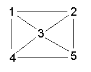

As an example, consider the following connected graph:

Fig. 2.15
The edges can be represented in Prolog as facts:
edge(1,2). edge(1,4). edge(1,3). edge(2,3). edge(2,5). edge(3,4). edge(3,5). edge(4,5).
To represent the fact that the edges are bi-directional we could either add eight more 'edge' clauses (edge(2,1),etc.) or we could try a rule like:
(*) edge(X,Y) :- edge(Y,X).
This is not a good idea, however. To see why it is not a good idea, try the following goal.
?- edge(5,1).
Notice that the rule (*) will be tried over and over in an infinite loop, so the goal will not terminate. Try it! A better way to handle this is to use a rule such as the following.
connected(X,Y) :- edge(X,Y) ; edge(Y,X).
Note the use of disjunction ';' in this rule. This rule could have been written as two rules:
connected(X,Y) :- edge(X,Y). connected(X,Y) :- edge(Y,X).
We wish to develop a Prolog definition which generates paths between any two nodes of the graph. More specifically, we require the following (kind of) behavior for the predicate 'paths'.
?- path(1,5,P). P = [1,2,5] ; P = [1,2,3,5] ; P = [1,2,3,4,5] ; P = [1,4,5] ; P = [1,4,3,5] ; P = [1,4,3,2,5] ; P = [1,3,5] ; P = [1,3,4,5] ; P = [1,3,2,5] ; no
The paths are represented by the list of nodes through which one must travel to get from node 1 to node 5. Here is a definition for paths:
path(A,B,Path) :-
travel(A,B,[A],Q),
reverse(Q,Path).
travel(A,B,P,[B|P]) :-
connected(A,B).
travel(A,B,Visited,Path) :-
connected(A,C),
C \== B,
\+member(C,Visited),
travel(C,B,[C|Visited],Path).
A declarative reading for the first clause amounts to "A path from A to B is obtained if A and B are connected". A declarative reading for the second clause amounts to "A path from A to B is obtained provided that A is connected to a node C different from B that is not on the previously visited part of the path, and one continues finding a path from C to B". Avoiding repeated nodes ensures that the program will not cycle endlessly.
Exercise 2.15 Suppose that edges have lengths. How does one calculate shortest paths between points in Prolog?